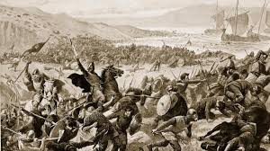
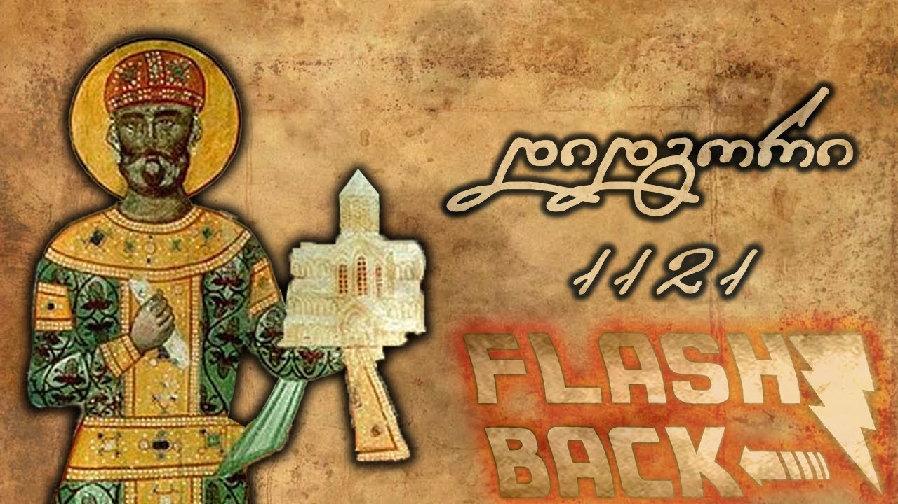

დიდგორის ბრძოლა
დიდგორის ბრძოლა ან ძლევაჲ საკვირველი (1121 წლის 12 აგვისტო) — ქართველთა ბრძოლა დავით IV აღმაშენებლის მეთაურობით თურქ-სელჩუკთა კოალიციური ლაშქრის წინააღმდეგ დიდგორის ველზე (მანგლისის მახლობლად, თბილისის მისადგომებთან). საქართველოს ისტორიაში დიდგორის ბრძოლა უდიდეს გამარჯვებათა რიცხვს მიეკუთვნება.


.jpg)
სხვადასხვა წყაროში დაცულია განსხვავებული ცნობები ლაშქრების სიდიდის შესახებ, თუმცა როგორც ქართულ-სომხურ-ლათინური, ასევე თვით არაბული წყაროების მიხედვით თურქ-სელჩუკთა კოალიციური ლაშქარი ბევრად აღემატებოდა ქართულს. დავით აღმაშენებლის ისტორიკოსმა მტრის ლაშქარი „ქვიშა ზღვისა“-ს შეადარა.
დიდგორის ველზე ილღაზის სელჩუკთა კოალიციური ლაშქრის დამარცხების, მისი დევნისა და საბოლოოდ განადგურების შემდეგ, დავით აღმაშენებელს გზა გაეხსნა თბილისისაკენ. მოგვიანებით, 1122 წელს — თბილისის, ხოლო 1123 წელს დმანისის აღება დიდგორის ბრძოლის გაგრძელებას წარმოადგენდა. დიდგორის ბრძოლაში გამარჯვებამ შესაძლებელი გახადა ქვეყნის საბოლოო გათავისუფლება და დასაბამი მისცა ოქროს ხანას საქართველოს ისტორიაში, ამასთანავე, საქართველომ საბოლოოდ დაიმკვიდრა რეგიონის უძლიერესი სახელმწიფოს სახელი.
იმდროინდელი საერთაშორისო ვითარება თურქ-სელჩუკებსა და საქართველოს სახელმწიფოს აშკარად უპირისპირებდა ერთმანეთს. ყველაფრიდან ცხადი იყო, რომ ეს ძლიერი წინააღმდეგობა დღეს თუ ხვალ იარაღით უნდა გადაწყვეტილიყო. მაგრამ საიმდღისო ამოცანად იგი საქართველოს სამეფო ხელისუფლების მიერ განდევნილ და შევიწროებულ თურქთა და ქალაქების — თბილისის, დმანისისა და განჯის თავკაცთა ელჩობამ აქცია. ამან დააჩქარა კოალიციური ლაშქრის შექმნა და დიდგორის ბრძოლაც. ყველა ძველი ისტორიკოსის (დავითის ისტორიკოსი, მათე ურჰაელი, ალ-ფარიკი) მოწმობით, დავითის მიერ აწიოკებულმა თურქმანებმა და აღნიშნული ქალაქების მმართველი ზედაფენის წარმომადგენლებმა მწუხარების ნიშნად შავად ხელპირშეღებილებმა, ტანსაცმელშემოფლეთილებმა და თავზე ნაცარდაყრილებმა გადაწყვიტეს „მათ ზედა მოწევნულნი ყოველნი ჭირნი“ მოეთხროთ და დახმარება ეძიათ ძლიერ მაჰმადიან მფლობელებს შორის. ეს ელჩობა, დავითის ისტორიკოსის ცნობების მიხედვით, 1121 წლის აპრილ-მაისში შედგა.
ვის მიმართეს დახმარებისათვის თურქებმა და ქალაქების წარმომადგენლებმა? ამ კითხვაზე საისტორიო წყაროებს სხვადასხვაგვარი ცნობები აქვთ დაცული; ასე მაგალითად, დავითის ისტორიკოსის ცნობით, „შეიწრებულნი თურქმანნი“ და მოქალაქეთა წარმომადგენლები „წარვიდეს სულტანს წინაშე და ყოველსა სპარსეთსა“, ე.ი. ისინი, უპირველესად, სულთანს ხლებიან, მაგრამ ამითაც არ დაკმაყოფილებულან და სხვა მაჰმადიანი მფლობელებისათვისაც მიუმართავთ. ისტორიკოსის განცხადება „წარვიდეს... ყოველსა სპარსეთსა“ სწორედ ამაზე მიუთითებს. სომეხი ისტორიკოსის მათე ურჰაელის მიხედვით კი, შავტანსაცმლიანი და თავდაუხურავი ელჩები „გაჰკიოდნენ თავიანთ სულთანთან ქალაქ განძაკში მელიქთან ტაფარის ძესთან და ტირილით ჩიოდნენ მის წინაშე თავიანთ დაღუპვას. ხოლო სხვები მივიდნენ არაბთა ოლქში, კარმიანის (კაბადოკიის) ქვეყანაში ამირა ხაზისთან არდუხის ძესთან და დიდი ტირილით უამბობდნენ მას... ხოლო მან თავისი ძლიერებისა და ზვიადობის გამო ბრძანა შეკრებილიყო თავისი ჯარების სიმრავლე“.
მათე ურჰაელის მიერ მოხსენიებული სულთანი მელიქი უნდა იყოს დავითის ისტორიკოსის მიერ კოალიციური ლაშქრის მონაწილედ მოხსენიებული და სულთნის ძედ მიჩნეული მელიქი. ასე რომ, მათეს ცნობით, თბილელთა და სხვათა წარმომადგენელთა ერთ ნაწილს, უწინარეს ყოვლისა, განძაში მყოფი მალიქისათვის მიუმართავს, ხოლო მეორე ნაწილს — ამირა ღაზისათვის, არდუხის ძისათვის. მათე ურჰაელის ღაზი არდუხის ძე იგივეა, რაც სხვა წყაროების ილღაზი არდუხის ძე.
განსხვავებულ ცნობას იძლევა აგრეთვე ალ-ფარიკიც, რომლის მიხედვითაც, „თბილისის ხალხი წავიდა ნაჯმ-ად-დინ-ილღაზთან და სთხოვა მას მოსულიყო და ჩაებარებინა ქალაქი“. ლაშქრობის მთავარ ინიციატორად ილღაზს მიიჩნევს გოტიეც. მართალია, ზემომოტანილ ცნობათა შორის ერთგვარი წინააღმდეგობაა, მაგრამ ეს ადვილად ასახსნელია და ამ ცნობათა ურთიერთ შეთანხმებაც მოსახერხებელია.
როგორც ირკვევა, უპირატესობა ამ შემთხვევაში ქართულ წყაროს, დავითის ისტორიკოსს, უნდა მიენიჭოს. ცხადია, უფრო სარწმუნოა, რომ თბილისისა და სხვა წარმომადგენლებს უშუალოდ სულთნისათვის მიემართათ, ვიდრე განძის მფლობელ მალიქის — ტაფარის ძისათვის, ან კიდევ ილღაზისათვის, რომელიც, მართალია, სახელგანთქმულ მეომრად იყო მიჩნეული, მაგრამ მაჰმადიან მფლობელებში ისეთი გავლენა ვერ ექნებოდა, როგორიც თვით სულთანს. ამას გარდა, სწორედ სულთანი შეიძლებოდა ყოფილიყო კოალიციური (გაერთიანებული) ლაშქრის შემდგენელი. მას ექნებოდა უფლება სხვადასხვა მაჰმადიან მფლობელთა მოწოდებისა და ერთი დროშის ქვეშ მათი თავმოყრისა.
ამრიგად, უდავოა, რომ თბილისის მოსახლეობის წარმომადგენლებმა დახმარება, უპირველეს ყოვლისა, სთხოვეს სულთანს, ერაყის სელჩუკიანთა იმდროინდელ გამგებელს მაჰმუდ მოჰამედის ძეს (1117-1131 წწ.).[8] სწორეს ის იყო მაჰმადიანთა ლაშქრის საქართველოზე თავდასხმის ორგანიზატორი. ყურადსაღებია აგრეთვე დავითის ისტორიკოსისა და მათე ურჰაელის ცნობები, რომელთა მიხედვით, თბილისელთა წარმომადგენლები არ დაკმაყოფილებულან მხოლოდ სულთანთან მისვლით და სხვა მაჰმადიან მფლობელებთან „ყოველ სპარსეთსა“ თუ „არაბთა ოლქებში“ თვით უშუალოდ გაუმართავთ მოლაპარაკება.[8]
ადვილი ასახსნელია ალ-ფარიკისა და გოტიეს მცირე უზუსტობაც, როცა ისინი ამ საქმის მთავარ ინიციატორად ილღაზს მიიჩნევენ; როგორც ჩანს, ალ-ფარიკიმ და გოტიემ თბილელთა ელჩობის შედეგად საქართველოსაკენ დაძრული კოალიციური ლაშქრობის სათავეში მყოფი ილღაზი ჩათვალეს იმ პიროვნებად, რომელსაც „თბილისის ხალხმა“ დიდგორის ბრძოლის წინ მიმართა თხოვნით.[8]
სულთან მაჰმუდ მოჰამედის ძე მაშინვე გამოეხმაურა თბილისელთა თხოვნას და სასწრაფოდ დიდი ლაშქრის ორგანიზაციის თადარიგი დაიჭირა. მან მაჰმადიან მფლობელთა ერთ ნაწილს მოუწოდა, ხოლო მეორეთ უბრძანა: „ვინც კი სადმე იყო დამასკო და ალეპოდან მოკიდებული, ყველას, მოლაშქრეობის შემძლებელს“ მონაწილეობა მიეღოთ საქართველოს წინააღმდეგ ომში. 1121 წლის დასაწყისში ილღაზმა დადო ზავი ჯვაროსნებთან და შეუდგა საქართველოში ლაშქრობის სამზადისს. 1121 წლის ივნისში აღმაშენებელმა განახორციელა რეიდი განძის საამიროს სიღრმეებში და ხუნანთან და ბარდავთან თავს დაესხა ფორმირების პროცესში მყოფ განძის საამიროს არმიას, რომელიც კოალიციურ ლაშქარს უნდა შეერთებოდა. ილღაზის კოალიციას მხოლოდ ლაშქრობისგან გადარჩენილი მეომრები შეუერთდნენ.[9]
კოალიციური ლაშქრის მიზანი იყო 1099 წლის მდგომარეობის და საზღვრების აღდგენა, კერძოდ სამშვილდე–ლორეს სელჩუკთა იმპერიაში დაბრუნება და განძის და თბილისის საამიროების გათავისუფლება საქართველოს სამეფოსგან.[10]